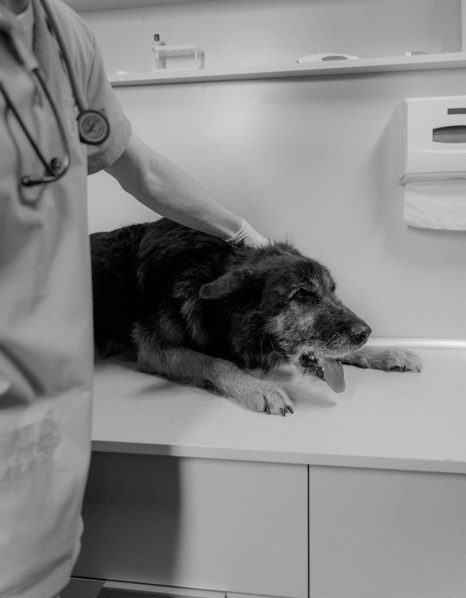

Baquedano 11, esquina Decher · Puerto Varas
Haustiere — mascotas, en alemán.
Un centro veterinario en la esquina de Baquedano con Decher. Acá está explicado, término por término, lo que se dice en una consulta y que casi nadie alcanza a preguntar.
- 5.362 personas los siguen en Instagram
- 213 publicaciones ya hechas allá
- 8 palabras del oficio traducidas acá
- 0 páginas propias · haustiere.cl no existe
Instagram @somos_haustiere y su agenda pública somoshaustiere.skedu.com, consultados el 08-09-2026. El dominio se comprobó el mismo día: no resuelve.
La pieza que sólo Haustiere puede tener
El diccionario de la consulta.
Ocho palabras que se dicen en cada consulta y que el dueño asiente sin entender del todo. Acá están en alemán —porque el nombre lo pide— y explicadas en castellano, con lo único que importa: cuándo hay que preocuparse.
-
Der Hund
el perro
La consulta parte igual para todos: temperatura, mucosas, hidratación y peso. El peso no es un dato de vanidad — de él salen todas las dosis.
-
Die Katze
el gato
Esconde el dolor mejor que cualquier animal. Un gato que se esconde, deja de comer o deja de usar la arena está diciendo algo, aunque camine normal.
-
Die Impfung
la vacuna
No es una sola: es un calendario que depende de la edad, de si sale a la calle y de con quién vive. El carné vale más que la memoria.
-
Die Kastration
la esterilización
Cirugía programada, con ayuno previo y control después. La conversación importante es la de antes: qué cambia y qué no cambia en el animal.
-
Das Fieber
la fiebre
La nariz seca no mide nada. La temperatura se toma con termómetro, y un animal decaído con fiebre es motivo de consulta el mismo día.
-
Die Zähne
los dientes
El sarro no es estético: es una infección crónica en la boca. El aliento muy fuerte suele ser el primer aviso, y llega antes que cualquier dolor visible.
-
Die Haut
la piel
Rascarse todo el año no es normal. Dónde se rasca y en qué época importa tanto como cuánto: cambia por completo la causa probable.
-
Der Notfall
la urgencia
Respiración difícil, no poder orinar, convulsión o un golpe fuerte. En esos cuatro no se espera a mañana: se sale de la casa.
Esto es vocabulario, no diagnóstico. Todo lo de acá se decide con el animal adelante y por un médico veterinario.

La consulta empieza antes de la camilla.
Cómo llegó, qué come, con quién vive y desde cuándo está así. Esas cuatro respuestas ahorran la mitad de los exámenes.
Servicios
Qué se hace acá.
Las ocho categorías son las que ustedes mismos publican en su agenda en línea. Acá están juntas, en una sola pantalla, que es como las busca alguien que todavía no es cliente.
Consultas veterinarias
La atención general: revisión completa y el plan de qué sigue.
Consultas de especialidad
Cuando el caso pide a alguien con otra formación, sin salir del mismo centro.
Perros · vacunas y servicios
El calendario y lo que va con él, según la edad y la vida que lleva.
Gatos · vacunas y servicios
Lo mismo para el gato, que se maneja distinto desde que entra por la puerta.
Exámenes clínicos
Los que se toman acá y los que se derivan, dicho antes de tomarlos.
Citas de control
El después: la hora que confirma si lo indicado está funcionando.
Certificado sanitario para viajes
El papel que piden para viajar con el animal, dentro y fuera del país.
Microchip de identificación
El número que devuelve al animal a su casa si se pierde.
Los ocho títulos salen de su propia agenda en línea, consultada el 08-09-2026. La frase que acompaña a cada uno la escribimos nosotros para que se entienda de qué se trata: si alguna no corresponde, se cambia en un minuto.

La primera vez
Qué conviene traer.
Cinco cosas que no cuestan nada y que cambian la consulta entera. Ninguna es un examen: son datos, y son los que el animal no puede dar.
- El carné de vacunas, aunque esté incompleto o venga de otra parte. Incompleto sirve; de memoria, no.
- Desde cuándo pasa lo que pasa, con fecha si se acuerda. «Hace tiempo» y «desde el lunes» no son lo mismo.
- Qué come y cuánto al día. La cantidad, no sólo el nombre de la comida.
- Qué se le ha dado y quién lo indicó. Incluye lo que se le dio en la casa sin receta.
- Un video corto de lo que hace en la casa. La tos, la cojera y el temblor casi nunca se repiten en la consulta.
Es una lista de preparación, no un diagnóstico ni una indicación: qué tiene el animal y qué se hace lo decide el veterinario con él adelante.

Cuándo traerlo
Señales que ameritan consulta.
- Deja de comer más de un día
- Toma mucha más agua que antes
- Baja de peso sin cambio de dieta
- Cojera que no mejora en el día
- Vómitos o diarrea que se repiten
- Aliento muy fuerte de un tiempo a esta parte
- Se rasca todo el año
- Cambia el ánimo o deja de subir donde subía
Ninguna de estas señales es un diagnóstico: son motivos para pedir hora. Qué tiene el animal lo determina el veterinario.

«Haustiere: los animales de la casa. El nombre ya dice de qué se trata — falta que Google lo sepa.»
Quiénes pasan por acá
Die Haustiere.


Cómo es una consulta
Cuatro momentos, en este orden.
Media hora que casi siempre se cuenta igual. Saberla de antemano cambia lo que uno alcanza a preguntar — y preguntar es gratis sólo si uno llegó sabiendo qué preguntar.
-
01
Lo que se pregunta
Qué pasa, desde cuándo, qué come y qué se le ha dado. Esas cuatro respuestas ordenan todo lo que viene después.
-
02
La revisión
Peso, temperatura, mucosas, corazón y pulmón, piel y boca. Completa siempre, aunque se venga por una sola cosa.
-
03
Qué se decide
Qué se resuelve hoy, qué necesita un examen y qué se controla en unos días. Las tres salidas se dicen en voz alta.
-
04
Al salir
Lo indicado, escrito. Y la fecha del control, que es la parte que más se pierde entre la puerta y la casa.
Así ocurre una consulta en cualquier centro que trabaje ordenado: es el orden del oficio, no un protocolo de Haustiere ni una indicación clínica. Qué se hace con cada animal lo decide el médico veterinario con él adelante.
Dónde estamos
Baquedano 11, esquina Decher.
Una esquina es más fácil de explicar que un número. Por eso está escrita así y no sólo con la dirección.
- Dirección
- Baquedano 11, esquina Decher, Puerto Varas
- Teléfono
- +56 9 8632 7447
- Dónde están hoy
- Instagram @somos_haustiere y su agenda somoshaustiere.skedu.com
- Horario
- Todos los días, de 09:00 a 20:00
El teléfono y el horario están tomados de su propia agenda en línea el 08-09-2026. El horario queda marcado porque una agenda de reservas y la puerta abierta no siempre son lo mismo.
Acá va la foto de la esquina de Baquedano con Decher. Es la que hace que alguien reconozca el lugar al pasar — y ninguna foto de banco la reemplaza.
Contar el caso antes de llegar
No se envía nada desde esta página: se abre WhatsApp con el mensaje escrito para que usted lo revise antes de mandarlo. Sin JavaScript el botón abre igual, con un mensaje base.

Para el dueño
Qué es esto y qué falta.
Qué es
Una propuesta de sitio web hecha por nuestra cuenta. Haustiere no la encargó ni la ha revisado. Dimos por cierto sólo lo que ustedes publican: la dirección de Baquedano 11 esquina Decher, el Instagram, y el teléfono, el horario y las ocho categorías de servicio que están en su agenda somoshaustiere.skedu.com, consultada el 08-09-2026.
Qué es ejemplo
El horario, marcado porque una agenda de reservas y la puerta abierta no son lo mismo, y la frase que acompaña a cada servicio, que la escribimos nosotros. El diccionario y los cuatro momentos son vocabulario y orden del oficio —sin dosis ni medicamentos— y la página lo dice tres veces.
El dominio, y qué falta
haustiere.cl estaba libre el 08-09-2026: lo comprobamos y no resuelve. Su agenda funciona para tomar hora, pero no explica nada ni aparece cuando alguien busca. Faltan las fotos del local, empezando por la esquina. Y el diccionario ampliado con los términos que ustedes usan a diario: esa lista es intransferible y ninguna otra veterinaria puede copiarla.